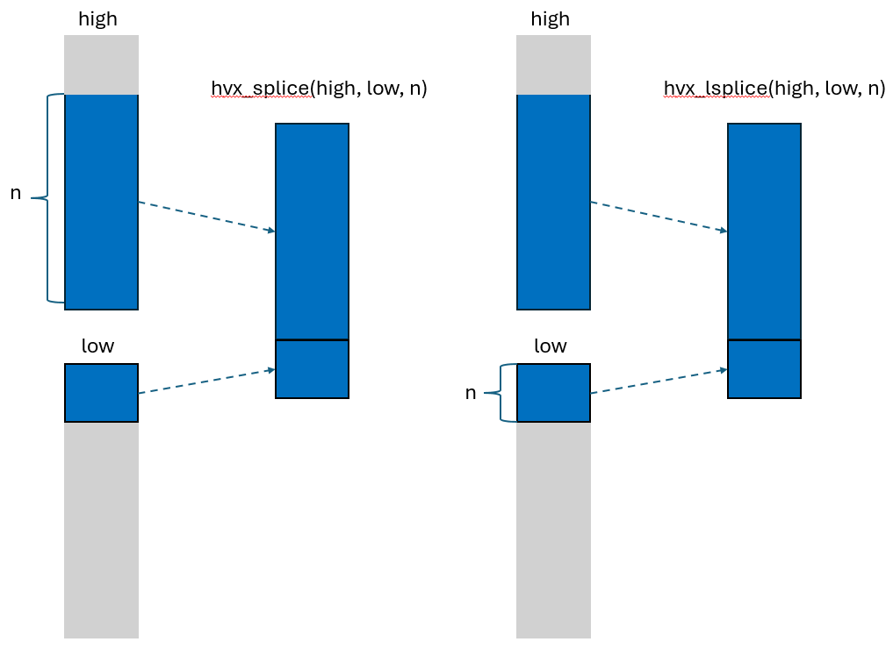

Abstract
This guide presents general optimization tips when writing Ripple code to Hexagon HVX SIMD hardware. We start with general optimization advice about writing Ripple code for SIMD hardware, which we complete with specific advice about writing to HVX. Then, we present profiling API and discuss its usage. Finally, we give instructions to install LLDB in the VS Code IDE.
Copyright (c) 2024-2025 Qualcomm Innovation Center, Inc. All rights reserved. SPDX-License-Identifier: BSD-3-Clause-Clear
License
Clear 3-clause BSD License
Copyright (c) 2025 Qualcomm Technologies, Inc. All rights reserved.
Redistribution and use in source and binary forms, with or without modification, are permitted (subject to the limitations in the disclaimer below) provided that the following conditions are met:
-
Redistributions of source code must retain the above copyright notice, this list of conditions and the following disclaimer.
-
Redistributions in binary form must reproduce the above copyright notice, this list of conditions and the following disclaimer in the documentation and/or other materials provided with the distribution.
-
Neither the name of the copyright holder nor the names of its contributors may be used to endorse or promote products derived from this software without specific prior written permission. NO EXPRESS OR IMPLIED LICENSES TO ANY PARTY’S PATENT RIGHTS ARE GRANTED BY THIS LICENSE. THIS SOFTWARE IS PROVIDED BY THE COPYRIGHT HOLDERS AND CONTRIBUTORS “AS IS” AND ANY EXPRESS OR IMPLIED WARRANTIES, INCLUDING, BUT NOT LIMITED TO, THE IMPLIED WARRANTIES OF MERCHANTABILITY AND FITNESS FOR A PARTICULAR PURPOSE ARE DISCLAIMED. IN NO EVENT SHALL THE COPYRIGHT HOLDER OR CONTRIBUTORS BE LIABLE FOR ANY DIRECT, INDIRECT, INCIDENTAL, SPECIAL, EXEMPLARY, OR CONSEQUENTIAL DAMAGES (INCLUDING, BUT NOT LIMITED TO, PROCUREMENT OF SUBSTITUTE GOODS OR SERVICES; LOSS OF USE, DATA, OR PROFITS; OR BUSINESS INTERRUPTION) HOWEVER CAUSED AND ON ANY THEORY OF LIABILITY, WHETHER IN CONTRACT, STRICT LIABILITY, OR TORT (INCLUDING NEGLIGENCE OR OTHERWISE) ARISING IN ANY WAY OUT OF THE USE OF THIS SOFTWARE, EVEN IF ADVISED OF THE POSSIBILITY OF SUCH DAMAGE.
Machine-independent Ripple optimization and troubleshooting
Be mindful of type conversions
Converting Ripple indexes
Performance impact: High.
We highly recommend that you do not convert expressions coming from ripple_id() indices, if they are used in memory references.
For instance, on a 64-bit machine, the following code narrows the Ripple index before using it in a array reference:
1: void vadd(float * a, float *b, float *c) {
2: ripple_block_t b = ripple_set_block_shape(VECTOR_PE, 32);
3: size_t v = ripple_id(b, 0);
4: unsigned v_shifted = v + 2;
5: c[rid] = a[v] + b[v_shifted];
6: }
The cast from size_t (which is 64-bit on a 64-bit machine) to unsigned (which we assume to be 32-bit on that same machine) on line 4 is an issue, because clang needs into account the fact that using a unsigned forces the maximum value for v_shifted to unsigned’s maximum value, 2^32 -1.
Numerically, the cast is similar to computing a[(v + 2) % (2^32-1)].
The % modulo can make it challenging for Ripple to analyze the memory access stride between vector lanes in the a[rid % 65535] access.
Hence, there is a risk that Ripple will miss that this is a coalesced access,
in which case a sequential (non-vectorized) memory access
will be generated.
Note that coalescing analysis typically improves as Ripple improves.
The safe option here is to avoid casting expression that depend upon a ripple_id and that determine a memory reference to be casted to a narrower type.
General vector optimization principles
In this section, we discuss general optimization principles when targeting a machine that has a vector engine.
Consider optimization as trying to avoid doing expensive things:
- Utilization is about putting all the vector lanes available to contribution.
- Coalescing is about performing loads and stores efficiently, in as few chunks of contiguous data as possible.
- Alignment is about loading and storing a data chunk that exactly matches one of the “hardware chunks” that the memory is made of.
- Register reuse is about avoiding unnecessary loads and stores by doing all the work needed on a given vector while the data is in the (vector) registers.
Utilization
Utilization is defined by how many vector lanes are active in the computation. It is recommended to grow the number of vector lanes to fully utilize at least one HVX vector.
Underutilization
Performance impact: Medium.
The number of hardware vector lanes utilized by our code depends upon
the type of the tensor elements we are manipulating.
Let elem_size be the number of bits in our tensor elements,
and vec_bits the number of bits in our vector engine.
For example, for HVX, vec_bits = 1024.
It is given by #v = ceiling((block_size x elem_size) / vec_bits).
For AVX512, vec_bits = 512, resulting in half the number of vector lanes for any specific data type.
This usually means that a good Ripple block size is one that is at least as big as the number of vector lanes offered by the underlying hardware vector engine. Using more can be beneficial, because it exposes more parallel computations, which can be used by the compiler to get better performance (typically by improving instruction-level parallelism, like pipeline or VLIW parallelism).
Overutilization
Performance impact: High.
If the number of active vector registers in a Ripple block of vector lanes goes beyond the size of the vector register file (e.g. HVX defines 32 vector registers per thread), the compiler may have to save registers to a slower memory and load them back later, which significantly lowers performance.
Beware that compilers often introduce temporary computations, which also take up register space and may lead to those extraneous store/loads.
Coalescing
Performance impact: High.
In vector hardware, loads and stores happen by chunks of contiguous memory (typically of the native vector size). Because they are slower than other instructions, the amount of loads and stores in a program tend to have a significant impact on performance. Hence, reducing the number of loads and stores is an important step in the optimization of SIMD programs. This impacts how we should load and store the data we manipulate.
When we only load and store contiguous data chunks that correspond to full native SIMD vectors, the number of loads and stores is minimized. Such loads and stores are called coalesced. While we depict the general goal here, this manual contains a section about specific ways to obtain coalescing
We want to load contiguous memory elements to contiguous processing elements (i.e. vector lanes). If we are using a 1-dimensional block shape, this means that only the rightmost dimension of a tensor’s access function must depend upon the vector lane id, and that in that access function, the vector lane id is not multiplied by anything (i.e. its coefficient is 1).
For example:
v = ripple_id(ripple_set_block_shape(0, 32), 0);
x = A[i][k][j + v];
If v is multiplied by a constant (other than 1),
this constant becomes a stride,
meaning that some elements of the tensor are skipped, which is less efficient
than a coalesced load.
If v is involved in other dimensions than the rightmost in a tensor access,
this results in a stride as well
(as large as the slice defined by the dimensions to the right of that
involving v).
So if the semantics of our computations allow for it, we only use v in the
rightmost dimension of our tensor references.
If we don’t, the code will be correct but slow.
Ripple lays out block elements into vector lanes along the first block dimension, then the second, etc.
Alignment
Performance impact : Medium.
Hardware memory space is typically partitioned regularly as
a large set of fixed-size chunks.
An example of this is cache lines.
Because of this partitioning,
the most efficient memory transfer (load or store) that can be done is by
transferring exactly a set of full chunks.
We have seen above that a condition for this to happen is for such
load or store to be coalesced.
For a vector engine to load exactly one chunk,
the start address of a coalesced load or store also has to start
at the starting address of a chunk.
We call such a load or store “aligned”.
The basic rule to have an aligned load or store is for its start address
(the address accessed by coordinate (0) or (0, 0)) to be a multiple of the
hardware vector size (e.g. 1024 bits, i.e. 128 bytes, for HVX).
Specifying Alignment
For best result, we advise the use of the ripple API to specify tensor
alignment, as well as using them as close to the load/store instruction as
possible. We provide
ripple_ptr_alignment and ripple_ptr_alignment_slice functions to specify the
pointer alignment from a tensor of pointers.
-
ripple_ptr_alignment_slice(Tensor_of_Pointers, Alignment_in_Bytes)This construct indicates that the element
(0, 0 ... 0, 0)is aligned by the provided alignment. -
ripple_ptr_alignment_slice(Tensor_of_Pointers, Alignment_in_Bytes, Slice_Index0, ...)This constructs is similar to
ripple_ptr_alignment_slice, with the addition of letting you specify the slice indices to extract the pointer which is aligned. Non-provided indices is assumed to be zero.
Considerations
By using this API, you are specifying alignment constraints that will be followed by the compiler. If, at runtime, the pointer is not aligned to the provided value, the behavior will be hardware defined (e.g., an hardware interrupt may be raised, or the values may be loaded/stored by ignoring the pointer bits that are not aligned).
Using the Ripple Vector Alignment API
Tensors with Alignment Hint
#define VECTOR_PE 0
void function_with_aligned_ptrs(size_t size, float *in, float *out) {
ripple_block_t BS = ripple_set_block_shape(VECTOR_PE, 4);
ripple_parallel(BS, 0);
for (size_t i = 0; i < size; ++i) {
// Indicates that in and out values are aligned to every 4 float values
*ripple_ptr_alignment(&out[i], 4 * sizeof(float)) = *ripple_ptr_alignment(&in[i], 4 * sizeof(float)) * in[i];
// Notice that you only need to specify the alignment once for it to apply to expressions of the same value (the second in[i] assumes the same alignment as the first one)
}
}
Tensors with Multiple Alignment Hints
Sometimes you may want to process multiple vectors at once (pairs). To indicate multiple alignment within a tensor, you can use multiple alignment calls by providing the slicing indices:
#define VECTOR_PE 0
void function_with_aligned_ptrs(size_t size, float *in, float *out) {
// Process pairs of 4 values
ripple_block_t BS = ripple_set_block_shape(VECTOR_PE, 4, 2);
ripple_parallel(BS, 0, 1);
for (size_t i = 0; i < size; ++i) {
// *in* and *out* pointers at tensor indices [0][0] and [0][1] are aligned to 4 float values
ripple_ptr_alignment(&in[i], 4 * sizeof(float));
ripple_ptr_alignment(&out[i], 4 * sizeof(float));
ripple_ptr_alignment_slice(&in[i], 4 * sizeof(float), 0, 1);
ripple_ptr_alignment_slice(&out[i], 4 * sizeof(float), 0, 1);
// The 4 alignment hints apply to the following load/store
out[i] = in[i] * in[i];
}
}
Using Other Alignment Hints
Ripple is based on clang, which natively supports a general alignment mechanism, through the __builtin_assume_aligned() function.
This function lets us indicate that some pointers are aligned on a certain number of bytes.
The compiler uses uses said indications to infer alignment of vector loads and stores occurring as a result of using Ripple.
In certain conditions, these hints cannot effectively be used by the compiler. We encourage to use the ripple_ptr_aligned API as close to the load/store instructions as possible for best results.
The following example illustrates the use of __builtin_assume_aligned, where we indicate that a, b, and
c are aligned on a 128-byte boundary.
The compiler is capable to calculate that, given the 128-byte alignments, all the vector loads from a and b and the vector store to c in the i loop will be aligned as well.
#define VECTOR 0
void vadd(int16_t * c, int16_t * a, int16_t * b, size_t n) {
a = (int16_t *) __builtin_assume_aligned(a, 128);
b = (int16_t *) __builtin_assume_aligned(b, 128);
c = (int16_t *) __builtin_assume_aligned(c, 128);
ripple_block_t BS = ripple_set_block_shape(0, 64);
ripple_parallel(BS, 0);
for (size_t i = 0; i < n; ++i) {
c[i] = a[i] + b[i];
}
}
Register reuse
Performance impact: High.
Register reuse is about avoiding unnecessary loads and stores between memory and the registers. If we need to use data (say a vector X of data) several times in our program, and we can perform all the computations that use the data right after loading X from memory to the registers, then we know that X won’t need to be evicted from the registers to make room for other values, and hence X won’t need to be loaded again. Loads (and stores) are expensive (they have a much higher access latency than the registers), hence by not having those extra loads, we are saving time, i.e., optimizing our program.
Because Ripple’s underlying compiler (LLVM) manages registers for us, it is hard to precisely control register use. The compiler may introduce loads and stores when it cannot allocate more registers at once, and conversely, it is able to remove superfluous loads and stores from an input program in some cases. A good general heuristic to keep data in registers is to decompose our computations into work subsets that don’t use more registers than provided by the hardware. In the realm of loop transformations, register tiling and loop fission are known to reduce the number of registers consumed by each work subset.
Forcing vector execution
Performance impact: Low.
Processor-specific compiler backends vary in how they lower vector code to instructions. When only a fraction of the vector is utilized, some backends decide to express the vector computation as a sequence of scalar computations. As a consequence, performance may be less predictable in partial-vector computations than with full-vector computations. The following flag can add predictability to Ripple by explicitly expressing computations as full-vector.
$clang -mllvm -ripple-pad-to-target-simd
Copyright (c) 2024-2025 Qualcomm Innovation Center, Inc. All rights reserved. SPDX-License-Identifier: BSD-3-Clause-Clear
Coalescing tips
Performance impact: High.
In this section, we look at various ways to obtain coalesced (i.e., stride-one access) loads from memory and stores to memory. Coalescing often has a drastic impact on the performance of the loads and stores in a Ripple program.
Make clearly linear access functions
In order to optimize vector loads and stores, the compiler performs a static analysis of the access patterns. When the analysis detects memory access patterns that depend linearly upon the Ripple indices, it is able to analyze memory strides along all block dimensions. Whenever stride-1 accesses are detected (even if it’s along only one of the dimensions), the compiler generates coalesced vector loads or stores.
x = A[...][...][ripple_id(BS, 0)]; // Coalesced access of A
The general user guidance here is that whenever a coalesced access exists, make it clear to the compiler in the access functions. The purpose of this section is to show common pitfalls, in which coalescing is not achieved, and ways to work around it.
Avoid dividing ripple_id()
Since the vector lane coordinates are integers, using a division results in an integer division.
Integer divisions are non-linear operations, hence they should not be used on a Ripple index. Using an integer division results in the computation of a vector of addresses, which is then used in a scatter/gather operation. These are much more expensive than standard vector loads/stores.
For example, consider vectorizing the following piece of sequential code,
where we know that iterations of w are independent.
We store every element of a in y,
and the even elements of b, for every two consecutive iterations, in z.
uint8_t foo(int W, uint8_t a[restrict 1][W], uint8_t b[restrict 1][W]) {
for (int w = 0; w < W; ++w) {
uint8_t y = a[w];
uint8_t z = b[2 * (w / 2)];
// Some other code below
...
}
To vectorize along w, we take chunks of nv0 iterations of w
and map the chunk elements to v0.
Basically, we create a loop (let’s call it u) that goes over the chunks,
and map the values of w within chunks to v0.
To occupy one vector with 8-bit element computations,
let’s start with a one-dimensional block of size 128.
uint8_t foo(int W, , uint8_t a[restrict 1][W], uint8_t b[restrict 1][W]) {
ripple_block_t BS = ripple_set_block_shape(0, 128);
size_t v0 = ripple_id(BS, 0);
size_t nv0 = ripple_get_block_size(BS, 0);
for (int u = 0; u < W; u += nv0) {
uint8_t y = a[u + v0];
uint8_t z = b[2 * ( (u + v0) / 2)];
// Some other code below
...
}
We find ourselves with
- a contiguous access for
a[u + v0], - but an access with an integer division in
b[2 * ((u + v0)/2)]. This latter access is very slow and it should be avoided if possible, because it results in a gather (the most general but slowest kind of load).
Returning to the original function,
one fairly easy way to get rid of this integer division in the reference to b
is to strip-mine w.
We basically expose the w/2 expression as a loop counter by rewriting the loop
with w = 2*w_o + w_i, and 0 <= w_i < 2, resulting in the following code:
for (int w_o = 0; w_o < W / 2; ++w_o) {
for (int w_i = 0; (w_i < 2) & (2 * w_o + w_i < W); ++w_i) {
uint8_t y = a[2 * w_o + w_i];
uint8_t z = b[2 * w_o + (w_i / 2)];
// Some other code below
...
}
}
Since w_i / 2 is always equal to 0, we can simplify this as:
for (int w_o = 0; w_o < W / 2; ++w_o) {
for (int w_i = 0; (w_i < 2) & (2 * w_o + w_i < W); ++w_i) {
uint8_t y = a[2 * w_o + w_i];
uint8_t z = b[2 * w_o];
// Some other code below
...
}
}
Now, if we map v0 along w_o,
we have stride-2 accesses for a[2 * (w_o + w_i / 2)] and b[2 * w_o + w_i]
(because of the “2” factor for w_o):
Small-stride loads and stores are cheaper than scatter/gathers
ripple_block_t BS = ripple_set_block_shape(0, 128);
size_t v0 = ripple_id(BS, 0);
size_t nv0 = ripple_get_block_size(BS, 0);
for (int u_o = 0; u_o < W / 2; u_o += nv0) {
for (int w_i = 0; w_i < 2 & (2 * u_o + w_i < W); ++w_i) {
uint8_t y = a[2 * u_o + 2 * v0 + w_i];
uint8_t z = b[2 * u_o + 2 * v0];
// Some other code below
...
}
}
We can further improve the situation by moving to a 2-dimensional grid.
In order to get contiguous memory access for a,
we can map w_i to the contiguous dimension v0,
and map w_o (previously mapped to v0) to v1.
Since w_i only takes values 0 and 1, a useful block size along v0 is 2.
Since v0 takes all values of w_i, the w_i loop “disappears”,
leaving only the (2 * u_o + w_i < W) conditional:
ripple_block_t BS = ripple_set_block_shape(0, 2, 64);
size_t v0 = ripple_id(BS, 0);
size_t v1 = ripple_id(BS, 1);
size_t nv1 = ripple_get_block_size(BS, 1);
for (int u_o = 0; u_o < W / 2; u_o += nv1) {
if (2 * u_o + v0 < W) {
uint8_t y = a[2 * u_o + 2 * v1 + v0];
uint8_t z = b[2 * u_o + 2 * v1];
// Some other code below
...
}
}
a is now accessed contiguously, since 2 * v1 + v0 corresponds to the way
lanes are laid out in a full vector.
Note that we load a 2x64 tensor out of a, and a 1x64 tensor out of b.
Operations in the “code below” section that involve both a and b will
trigger a broadcast of b to a 2x64 shape.
Small-stride loads and stores
Strided loads (stores, mutatis mutandis) are typically slow, since they can require up to as many loads (stores) as the number of elements in the strided operation. They will happen for instance if we distribute vector lanes along columns of a tensor, since the elements of a column are separated by a full row. In this case, we recommend either changing the vectorization strategy, or modifying the tensor’s layout.
Besides choosing a better way to vectorize our code, we can optimize strided loads (stores) when the strides between elements or chunks are smaller than a vector-width (e.g. 128 bytes on HVX). Developers working with complex numbers, coordinate systems and RGB images often find themselves handling large vectors of tuples, from which they often need to extract one element at a time (for each tuple).
For instance, if we have a vector of complex numbers, and we want to take its norm, we could naively load the real and imaginary parts, as follows:
float norm(float vec[32][2]) {
ripple_block_t BS = ripple_set_block_shape(VECTOR, 32);
size_t v = ripple_id(BS, 0);
float real = vec[v][0];
float imag = vec[v][1];
return ripple_reduceadd(0b1, real * imag);
}
The problem with the above code is that the loads of vec[v][0] and vec[v][1]
are both strided loads, which are generally inefficient.
To simplify,
let’s assume that our machine’s hardware vector can contain 32 floats.
A more efficient approach than the strided loads is to load the whole vec
into two registers, and then rearrange the data inside the registers,
as follows:
/// First half comes from the odd indices, second half from the even ones.
size_t separate_re_im(size_t i, size_t n) {
return (i < n / 2) ? 2 * i : 2 * (i - n / 2) + 1;
}
float norm(float vec[32][2]) {
ripple_block_t BS = ripple_set_block_shape(VECTOR, 32, 2);
size_t v0 = ripple_id(BS, 0);
size_t v1 = ripple_id(BS, 1);
float all_data = vec[v0][v1];
float real_and_im = ripple_shuffle(all_data, separate_re_im);
return ripple_reduceadd(0b01, ripple_reducemul(0b10, real_and_im));
}
Thus, with 4 additional lines of code, we can go down from 64 loads (assuming each scalar in the strided loads have to be loaded separately) to 2 (vector) loads.
In this example, we could also have used the shuffle_pair interface to stay closer to the original idea to have a real and
imag blocks, as follows:
size_t take_real_from_pair(size_t i, size_t n) {
return 2 * i;
}
size_t take_imag_from_pair(size_t i, size_t n) {
return 2 * i + 1;
}
float norm(float vec[32][2]) {
ripple_block_t BS = ripple_set_block_shape(VECTOR, 32);
size_t v0 = ripple_id(BS, 0);
size_t v1 = ripple_id(BS, 1);
float all_data = vec[v0][v1];
float first = *(vec + v0);
float second = *(vec + 32 + v0);
float real =
ripple_shuffle_pair(first, second, take_real_from_pair);
float imag =
ripple_shuffle_pair(first, second, take_imag_from_pair);
return ripple_reduceadd(0b01, real * imag);
}
To do so, we had to use two different (but simpler) shuffle functions.
In C++, the ripple/zip.h header provides a few functions
to help load and store vectors of fixed-size tuples and turn them
into tuples of vectors.
In particular, the rzip::shuffle_unzip shuffle function
can express all the necessary in-vector data reordering.
Data reordering
Some famous data layout reorderings, like data tiling, can speed up algorithms by laying out data that are used together (a tile) consecutively in memory. That way, a single tile can be loaded with a small number of coalesced loads.
Tradeoff
When considering data reordering in the process of optimizing a program, it is important to consider the cost of the data reorganization itself, as they can involve a lot of loads and stores. If the data reordering does not result in enough gain to offload the cost of the data reordering, then the reordering is not worthwhile.
Copyright (c) 2024-2025 Qualcomm Innovation Center, Inc. All rights reserved. SPDX-License-Identifier: BSD-3-Clause-Clear
Hexagon (R) HVX Optimization
This section is structured as a list of coding recommendations in order to get competitive performance out of your Ripple programs.
Optimization level
Ripple has been most tested with the -O2 option on HVX,
which seems to be the most common optimization level.
clang -O2 ...
Vector size parameters
Current versions of HVX ISAs tend to come with a register file of 32Kb total. Please check the appropriate programmer’s manuals for any specific information, such as number and bit-width of registers, about the particular architecture version you are compiling for. The following block sizes illustrate single-vector block sizes assuming a vector width of 1024 bits.
| element type | i8/u8 | i16/u16/f16 | i32/u32/f32 |
|---|---|---|---|
| single-vector block size | 128 | 64 | 32 |
Since HVX instruction packets can contain up to four instructions, it is usually not useful to make the size of your block larger than four vectors.
For more information about VLIW slot usage, please consult the Hexagon HVX Programmer’s Reference Manual (available on docs.qualcomm.com).
Make the type of constants (“immediates”) explicit
Performance impact: High.
One thing to remember when coding in Ripple, is that it maintains all semantical aspects of its underlying language. One aspect of C that can impact performance in C and C++ is their implicit type conversions, and the default type for its constants.
Example 1. Consider the following function, which doubles the value of a float array.
1:void double_me(float * A, unsigned n) {
2: ripple_block_t b = ripple_set_block_shape(HVX_LANES, 32);
3: ripple_parallel(b, 0);
4: for (int i = 0; i <n; ++i) {
5: A[i] = 2.0 * A[i];
6: }
7:}
Problem: The 2.0 immediate is by default a double in C and C++.
Also, type promotion rules in C/C++ indicate that the multiplication line 5 is done after promoting both operands to the same type, double.
Hence, Ripple tries to produce a SIMD multiplication of 32 doubles.
However, current versions of HVX do not support SIMD
double-precision instructions.
As a result, the generated code is sequentialized, resulting in an order of magnitude slower performance than if SIMD could have been used.
Solution: Make the 2.0 immediate explicitly of the float type, using the f suffix.
5: A[i] = 2.0f * A[i];
The same issue can happen with integers, for which the default type is int, as in the following example:
1:void double_me(short * A, unsigned n) {
2: ripple_block_t b = ripple_set_block_shape(HVX_LANES, 64);
3: ripple_parallel(b, 0);
4: for (int i = 0; i <n; ++i) {
5: A[i] = 2 * A[i];
6: }
7:}
Here, the 2 line 5 is an int, and so is the subsequent multiplication,
because of type promotion rules in the C programming language.
Solution: convert it to short explicitly.
5: A[i] = ((short) 2) * A[i];
If you are using C++, precomputing it and forcing it to be a constexpr will make sure that there is no extra cost to this conversion, as in the following code:
1:void double_me(short * A, unsigned n) {
2: ripple_block_t b = ripple_set_block_shape(HVX_LANES, 64);
3: constexpr short two = (short) 2;
3: ripple_parallel(b, 0);
4: for (int i = 0; i <n; ++i) {
5: A[i] = two * A[i];
6: }
7:}
Optimizing floating-point code
Use floating point types up to 32-bit wide (float) only
Performance impact: High.
Hexagon supports two native floating-point types: float and _Float16.
__bf16 is partially emulated.
There isn’t currently a native HVX double vector ISA.
Hence, avoid double-precision computations in your vector codes,
which will come out as sequentialized.
Leverage compiler flags
Extended precision
Performance impact: Medium.
HVX allows extended-precision computations to happen in sequences of floating-point operations happening between memory accesses. These are in a way more precise than IEEE floating-point, but they will result in a different numerical result from the same computation performed on IEEE floating point numbers. It is possible to forgo of extended precision and be fully compatible with IEEE. However, this comes at a performance cost.
The use of fast, extended precision vs. slower, IEEE-compliant precision, is controlled by the following flag:
-mhvx-qfloat=<mode>
We refer to the HVX manual to describe the exact behavior of the following four modes:
strict-ieeewill give you full compatibility with IEEE floating point.ieeeuses extended precision for some operations.lossyuses extended precision for more operations.legacyuses extended precision for almost all operations.
As of clang 21.0, the default is set to lossy.
Warning: the lossy option also implies other flags that impact precision, such as -ffast-math, which declares that floating-point (+, *) operations are commutative and associative, and that the data is free of NaNs and infinity.
Working with finite values
Performance impact: Low.
clang is able to optimize some codes when you know that your floating-point values are always defined (they are not a NaN) and never infinite.
If you are in that case, use the -ffinite-only command-line flag.
Relaxing the ordering of computations
Performance impact: Medium.
Addition and multiplication are commutative and associative for real numbers. This means that you can change the order in which a sequence of (for instance) additions (often called “reductions”) are computed without changing the result. Being able to change this order allows compilers to execute such sequences of operations faster.
Floating point numbers are an approximation for real numbers, and as a consequence, their operations aren’t associative strictly speaking. Changing the order of floating-point computations typically introduces some amount of precision error.
Solution If your computation tolerates some amount of floating-point error, or if semantically that order does not matter for the resulting computation, you can let Ripple know it, using the following command-line flag:
clang -fassociative-math
This will speed up some computations, including reductions (expressed through the ripple_reduce_*() ripple API).
Fast conversions from floating-point to integer
Performance impact: Low.
Conversion from floating-point (Float and float types) to integer
(int16_t and int32_t) can be slow,
as clang tries to implement it as precisely as possible.
Solution Enable fast floating-point conversion, which is very close semantically, but uses a single instruction. To enable it, use the following command-line flag:
clang -mllvm -hexagon-fp-fast-convert=true ...
Using ripple_shuffle on vector pairs
Performance impact: Medium.
We empirically noticed that shuffles on blocks of 2 vectors tend to generate more efficient machine code.
Inlining functions
Performance impact: High.
For an HVX target, there are significant overheads associated with function calls. The overheads mostly arise from saving the register frame onto the stack before the function call and loading the register frame from the stack after the call returns. Consequently, we advise the programmer to utilize clang’s “always_inline” function attribute. Avoid these overheads while maintaining code-readability as follows:
static int foo(int a, int b) __attribute__((always_inline)) {
/// ...
}
or in C++
static int foo(int a, int b) [[gnu::always_inline]] {
/// ...
}
Functions optimized for HVX
High-throughput data reordering (scatter/gather)
Performance impact: High.
Loading from a collection of arbitrary addresses into a vector is by construction a long-latency operation, as it can result in bank conflicts. Hence, we do not recommend the direct use of non-coalesced access functions.
However, the Ripple vector library includes a high-bandwidth memory-to-memory copying API for HVX, which can move large amounts of data in parallel (still with the same type of latency).
In cases where we cannot change our computations
to create coalesced data accesses, we can still rearrange our data into a set
that can be accessed in a coalesced way a bit later,
using the hvx_gather/hvx_scatter API.
Use cases for scatter-gather include indirections (A[B[i]]),
large lookup tables, sparse-dense array computations (for instance sparse matrix dense vector multiplication), and strided data accesses, particularly when the data access stride is large (e.g. when accessing element of a large array along columns).
We refer to the Ripple manual for a more complete description of
hvx_scatter and hvx_gather.
Explicit bfloat16 conversions
Performance impact: High.
Ripple supports three types of conversions from float to __bf16:
to_bf_trunc, a direct truncationto_bf_nan, a truncation that avoids incorrect NaN conversions (they can become an infinity using the direct shift)to_bf_round, a conversion that performs an even rounding and avoids incorrect Nan conversions. The behavior of this conversion is compatible with x86 bfloat conversion.
Dynamic rotations
Performance impact: Low.
hvx_rotate(x, n) will consider x flat (irrespective of its shape) and rotate the elements towards n lower indices
(e.g. the element at position 3+n goes to position 3).
One valuable aspect of this function is that n doesn’t need to be
a compile-time constant.
n could be a loop counter, for instance.
Narrowing shifts
Performance impact: Medium.
Syntax
narrow_t hvx_narsh[[_rnd]_sat][_noshuff](wide_t odd, wide_t even, uint32 shift);
A narrowing shift (or “narsh”) is an operation on integers,
which performs a right shift followed by a conversion
to a smaller integer type.
The conversion can be done by truncation or using saturation (using the function name suffix _sat).
When saturation is used, we can also request rounding up, using the
_sat_rnd suffix.
The shift amount sh is the same for all elements of the block.
Two forms are supported. The first, faster form takes two inputs, performs a narrowing shift, and shuffles the resulting block.
The second form, suffixed with _noshuff, doesn’t shuffle the result.
Supported source and destination types __
| wide (source) type | narrow (destination) type |
|---|---|
| i32 (int32_t) | i16, u16 |
| u32 (uint32_t) | u16 |
| i16 (int16_t) | i8, u8 |
| u16 | u8 |
An interesting aspect of this function is that it packs the narrowed by pairs, i.e. two 32-bit integers get narrowed and packed into one 32-bit integer.
Examples
int16_t hvx_narsh_sat_i16toi8(int16_t odd, int16_t even, uint32_t shift);
uint32_t hvx_narsh_rnd_sat_u32tou16_noshuff(uint32_t odd, uint32_t even, uint32_t shift);
Constraints
hvx_narsh works on block sizes that occupy a full HVX vector.
Vector splicing
Performance impact: High.
Syntax
T hvx_splice(T high, T low, size_t n);
T hvx_lsplice(T high, T low, size_t n);
This is a flat operator, which means that it considers a block as being
one-dimensional.
Hence, we describe blocks here as “vector“s.
hvx_splice forms a vector from two vectors high and low.
Let’s call N the number of elements in the vector.
The returned vector contains
the n lowest elements of high as its highest elements,
and the N-n highest elements of low as its lowest elements.
hvx_lsplice (“low splice”) forms a vector from two vectors high and low.
The returned vector contains
the n highest elements of low as its lowest elements,
and the N-n lowest elements of high as its highest elements.
This behavior is illustrated on Figure H1.  Figure H1. hvx_splice/hvx_lsplice behavior
Note: An implicit “modulo N” is applied to n, to ensure sound semantics.
Examples
Typical uses for hvx_splice are codes that use overlapping windows of tensors,
for example in stencils, convolutions and pooling.
Example 2 will be a sliding window, a 1-dimensional Gaussian blur.
hvx_splice is also sometimes used to implement padding, as shown in Example 1.
Example 1: We need to add two arrays, but only one of them has a size
that is a multiple of the HVX vector size (here called HVX_SIZE_U16).
#define HVX_SIZE_U16 64
void padded_add(size_t n, uint16_t * in1_padded, uint16_t * in2_unpadded,
uint16_t * out_padded) {
ripple_block_t B = ripple_set_shape(HVX_LANES, HVX_SIZE_U16);
size_t v = ripple_id(B, 0);
size_t i;
// full-vector loop: we know we have full vectors from in1 and in2
for (i = 0; i < n; i += HVX_SIZE_U16) {
out_padded[i + v] = in1_padded[i + v] + in2_unpadded[i + v];
}
// epilogue: There aren't enough elements in in2_unpadded to add with.
// We're splicing that partial vector with a vector of zeros
out_padded[i + v] = in1_padded[i + v] +
// we want to specify the #elements taken from the lower vector --> lsplice
hvx_lsplice(0, in2_unpadded[i + v], n - i);
}
Note that the same effect can be obtained using conditionals in this case.
The epilogue code in padded_add below could be replaced with the following
code to obtain the same result.
out_padded[i + v] = in1_padded[i + v] + (i + v < n) ? in2_unpadded[i + v] : 0;
The difference between the two lies in the use of predicate registers in the latter. The sequence of instructions for the original padded_add epilogue are roughly:
- Compute
n - i(a scalar). - Top off
in2_unpaddedwith zeros usinghvx_lsplice. - Add
in1_paddedwith the combined vector
The sequence of instruction for the conditional-based version is roughly:
- Compute the vector predicate for the expression
i + v < n. - Select the elements from the zero-vector and
in2_unpaddedas specified in the vector predicate. - Add
in1_paddedwith the resulting vector
While the number of steps seems comparable,
computing predicates can be more expensive than computing non-predicates.
Hence in this case, the version based on hvx_lsplice is generally preferred.
Example 2: Stencil operations are often used to write filters, or iteratively solve partial differential equations.
The following code is a simple gaussian blur operating on a 1-d signal:
void gaussian_blur(size_t n, float * in, float * out) {
constexpr float one_third = 1.f/3.f;
for (size_t i = 1; i < n - 1; ++i) {
out[i] = (in[i - 1] + in[i] + in[i + 1]) * one_third;
}
}
A naïve vectorization can be obtained by decorating the i loop with
ripple_parallel.
No matter how in and out are align, at least two of the loads of in
will be unaligned.
We can do better by using only aligned loads and stores.
void gaussian_blur(size_t n, float * in, float * out) {
constexpr float one_third = 1.f/3.f;
constexpr size_t nv = 32;
constexpr size_t hvx_bytes = nv * sizeof(float);
ripple_block_t B = ripple_set_shape(HVX_LANES, nv);
size_t v = ripple_id(B, 0);
float * in_ptr_lower, * in_ptr, * in_ptr_upper;
// prologue
in_ptr = ripple_ptr_alignment(&in[0], hvx_bytes);
in_ptr_upper = ripple_ptr_alignment(&in[nv], hvx_bytes);
float * out_ptr = ripple_ptr_alignment(&out[i], hvx_bytes);
out_ptr[v] = (hvx_lsplice(0, in_ptr, 1) +
in_ptr[v] +
hvx_lsplice(in_ptr, in_ptr_upper, 1)) * one_third;
// steady-state loop
size_t i;
for (i = nv; i < n - nv; i += nv) {
in_ptr = ripple_ptr_alignment(&in[i], hvx_bytes);
in_ptr_lower = ripple_ptr_alignment(&in[i - nv], hvx_bytes);
in_ptr_upper = ripple_ptr_alignment(&in[i + nv], hvx_bytes);
float * out_ptr = ripple_ptr_alignment(&out[i], hvx_bytes);
out_ptr[v] = // take one extra element from the lower vector
(hvx_lsplice(in_ptr_lower, in_ptr, 1) +
in[v] +
// take one extra element from the upper vector
hvx_splice(in_ptr, in_ptr_upper, 1)) * one_third;
}
// epilogue
if (i + v < n) {
in_ptr = ripple_ptr_alignment(&in[i], hvx_bytes);
in_ptr_lower = ripple_ptr_alignment(&in[i - nv], hvx_bytes);
float * out_ptr = ripple_ptr_alignment(&out[i], hvx_bytes);
out_ptr[v] = (hvx_lsplice(in_ptr_lower, in_ptr, 1) +
in_ptr[v] +
hvx_lsplice(in_ptr, 0, 1)) * one_third;
}
}
The code above is faster than the original code, because it only involves aligned loads and stores.
We can make it even faster by noticing that consecutive iterations of i
reuse two of the three input vectors.
Hence, instead of re-loading these two vectors,
we can just reuse them from the previous iteration.
This reuse technique, often called “register rotation,”
is applied to gaussian_blur below.
void gaussian_blur(size_t n, float * in, float * out) {
constexpr float one_third = 1.f/3.f;
constexpr size_t nv = 32;
constexpr size_t hvx_bytes = nv * sizeof(float);
ripple_block_t B = ripple_set_shape(HVX_LANES, nv);
size_t v = ripple_id(B, 0);
float * in_ptr_lower, * in_ptr, * in_ptr_upper;
// prologue
in_ptr = ripple_ptr_alignment(&in[0], hvx_bytes);
in_ptr_upper = ripple_ptr_alignment(&in[nv], hvx_bytes);
float * out_ptr = ripple_ptr_alignment(&out[i], hvx_bytes);
out_ptr[v] = (hvx_lsplice(0, in_ptr, 1) +
in_ptr[v] +
hvx_lsplice(in_ptr, in_ptr_upper, 1)) * one_third;
// steady-state loop
size_t i;
for (i = nv; i < n - nv; i += nv) {
// register rotation: in_ptr -> in_ptr_lower; in_ptr_upper -> in_ptr
in_ptr_lower = ripple_ptr_alignment(in_ptr, hvx_bytes);
in_ptr = ripple_ptr_alignment(in_ptr_upper, hvx_bytes);
// in_ptr_upper is new, still need to load it
in_ptr_upper = ripple_ptr_alignment(&in[i + nv], hvx_bytes);
float * out_ptr = ripple_ptr_alignment(&out[i], hvx_bytes);
out_ptr[v] = // take one extra element from the lower vector
(hvx_lsplice(in_ptr_lower, in_ptr, 1) +
in[v] +
// take one extra element from the upper vector
hvx_splice(in_ptr, in_ptr_upper, 1)) * one_third;
}
// epilogue
if (i + v < n) {
// register rotation applied here as well
in_ptr_lower = ripple_ptr_alignment(in_ptr, hvx_bytes);
in_ptr = ripple_ptr_alignment(in_ptr_upper, hvx_bytes);
float * out_ptr = ripple_ptr_alignment(&out[i], hvx_bytes);
out_ptr[v] = (hvx_lsplice(in_ptr_lower, in_ptr, 1) +
in_ptr[v] +
hvx_splice(in_ptr, 0, 1)) * one_third;
}
}
Let V the number of HVX vectors in in.
With this transformation, the total number of vector loads from in went from
about 3*V to V, without adding any work, a clear performance win.
Note that the versions of gaussian_blur above that use hvx_splice assume
that it’s safe to read up to one vector past the upper boundary of in.
It is possible to remove that limitation by writing slightly more complex code.
Constraints
high and low shapes must correspond to
the number of elements in one HVX Vector.
Copyright (c) 2024-2025 Qualcomm Innovation Center, Inc. All rights reserved. SPDX-License-Identifier: BSD-3-Clause-Clear
Profiling on Hexagon(R)
Counting cycles in the code
The simplest way to measure performance is by reading cycle counters, using clang’s standard builtin:
unsigned long long __builtin_readcyclecounter();
For instance, the following code measures the cycle count of a 2-d nested loop:
#include<ripple.h>
/* We assume the existence of some function float f(float) in this module */
void foo(float * in, float * out, size_t n) {
ripple_block_t B = ripple_set_block_shape(HVX_LANES, 32);
unsigned long long start, end;
start = __builtin_readcyclecounter();
for (size_t i = 0; i < n; ++i) {
ripple_parallel(B, 0);
for (size_t j = 0; j < n; ++j) {
a[n*i + j] = f(b[n*i + j]);
}
}
end = __builtin_readcyclecounter();
printf("2-d loop took %llu cycles.\n", end - start);
}
Profiling influences performance
As often, observing a system changes it. In this section, we share insights about how and when using the profiling API could reduce the performance of the profiled code.
Instruction scheduling overhead
While it is tempting to try and profile small portions of code,
we need to consider that the calls to __builtin_readcyclecounter() themselves result in instructions.
As a result, the compiler has to schedule these profiling instructions along with the instructions you want to profile.
This can result in a slightly higher number of VLIW packets,
which will increase the number of cycles used for your computation.
Risk of performance degradation from instruction pipelining
If we are trying to accumulate cycle counts in a specific region of code (for instance within a loop), we need to consider that fine-grained instruction scheduling can be affected by the presence of profiling code in the inner loop.
For instance, if we wanted to accumulate the cycle counts of the j iterations
in the above examples, we would write the following code:
1: void foo(float * in, float * out, size_t n) {
2: ripple_block_t B = ripple_set_block_shape(HVX_LANES, 32);
3: unsigned long long start, end, accumulated;
4: for (size_t i = 0; i < n; ++i) {
5: #pragma clang loop unroll(2)
6: ripple_parallel(B, 0);
7: for (size_t j = 0; j < n; ++j) {
8: start = __builtin_readcyclecounter();
9: a[n*i + j] = f(b[n*i + j]);
10: end = __builtin_readcyclecounter();
11: accumulated += end - start;
12: }
13: }
14: printf("2-d loop too %llu cycles.\n", accumulated);
15:}
We note that, as far as Ripple is concerned, this code is correct.
Since accumulated doesn’t depend upon j,
it is interpreted as a scalar value,
and the statement line 11 is also a scalar increment.
The accumulation will happen only once per vector computation
(n/32 times total), which is the intended behavior.
However, the profiling code can reduce the code performance, compared to the unprofiled code, by constraining the compiler’s freedom to schedule instructions efficiently. Hexagon being a VLIW machine, the Hexagon compiler needs to schedule instructions as packets of parallel instructions. The more instructions can be reordered, the better the chances for the compiler’s VLIW scheduler to create well-utilized packets.
In the example above, calls to __builtin_readcyclecounter() cannot be rescheduled w.r.t. other instructions, to let developers measure exactly what they want.
This also means that other instructions cannot go past a call to __builtin_readcyclecounter(). As a result, instructions from line 9 cannot be combined with instructions from other lines.
Instructions from line 9 at a certain j iteration also cannot be combined with instructions from the next j iteration
(such cross-iteration combination is normally enabled by the unroll loop pragma line 5).
Hence, the compiler has much less freedom to pack instructions into VLIW packets as efficiently as with the unprofiled code.
Application profiling with itrace
itrace is a low-level profiling tool in the Hexagon SDK that provides:
- PMU (Performance Monitoring Unit) event capture for DSP and optionally CPU.
- Markers and sections for custom instrumentation.
- Periodic sampling of counters.
- Ability to log traces in Perfetto-compatible formats for visualization. It’s more flexible than sysmon but requires code integration and configuration.
itrace is located in the Hexagon SDK under
libs/itrace/
To use itrace, lease consult the HTML documentation in the SDK:
/docs/doxygen/itrace/index.html
Event IDs are defined in the following files:
- DSP PMU: itrace_dsp_events_pmu.h
- CPU events: itrace_cpu_events_la.h
Basic workflow
Initialize profiler
itrace_profiler_handle_t dsp_profiler_handle;
itrace_profiler_create(&dsp_profiler_handle, ITRACE_DOMAIN_DSP);
Register the PMU events you want to see
itrace_add_event(dsp_profiler_handle, ITRACE_DSP_EVENT_L1D_CACHE_MISS);
itrace_add_event(dsp_profiler_handle, ITRACE_DSP_EVENT_INSTR_COUNT);
Start/stop profiling
itrace_start(dsp_profiler_handle);
// Run your workload
itrace_stop(dsp_profiler_handle);
itrace_dump(dsp_profiler_handle, "trace_output.json");
Output can be JSON or protobuf for Perfetto visualization.
Instrumentation
Add markers for timeline correlation:
itrace_add_marker(dsp_profiler_handle, "Begin DSP section");
itrace_add_section(dsp_profiler_handle, "FFT compute");
// ... code ...
itrace_end_section(dsp_profiler_handle);
Markers work on CPU and DSP; DSP-side markers give best granularity.
Advanced features
Periodic sampler: sample PMU counters at fixed intervals.
Multi-pass mode: if you need >8 PMU events, itrace cycles through sets automatically.
Perfetto integration: itrace can emit traces compatible with Chrome’s about://tracing or Perfetto UI.
Constraints
- Only one PMU client at a time (itrace vs sysmon vs SDP). If you see registration errors, stop other profilers or reboot.
- itrace is per-application; unlike sysmon, it doesn’t give system-wide DSP load.
- Some SDK versions (e.g., v69/v75) have known itrace bugs — please check release notes.
Disclaimer: sysmon is entirely independent from Ripple,
and Ripple support won’t be able to assist you with sysmon issues.
Profiling whole DSP execution with sysmon
Hexagon’s SysMon (“sysMonApp”) is the command‑line profiler bundled with the Hexagon SDK that lets you capture DSP workload/utilization and PMU (Performance Monitoring Unit) counters from different Q6 subsystems (ADSP/CDSP/SDSP/MDSP) across Android, Linux LE, QNX and virtualized (Gunyah) targets. Below is a concise, engineer‑friendly “how to” that you can use directly.
Where to find sysmon in the SDK
SysMon binaries are shipped under the SDK install at:
<HEXAGON_SDK_ROOT>/tools/utils/sysmon/
Typical artifacts include:
sysMonApp (Android native / Linux LE) sysMonAppQNX (QNX) sysMon_DSP_Profiler_v2.apk (Android GUI app, Java) These names can vary slightly by SDK version (6.x), but the folder location is consistent.
Put the binary on your device/target
Android (ADB)
Ensure your device is accessible and /system is writable. Push the binary and make it executable:
adb root
adb remount
adb push $HEXAGON_SDK_ROOT/tools/utils/sysmon/sysMonApp /data/local/tmp/
adb shell chmod 777 /data/local/tmp/sysMonApp
Heads‑up: To profile from Android (guest VM) into the DSP (PVM), FastRPC daemon must be running on the Android side (e.g., /system/bin/adsprpcd). If that daemon isn’t present, you can run SysMon directly on the PVM (e.g., QNX) instead.
QNX (or Linux‑LE)
Copy the matching sysMonAppQNX (or sysMonAppLE) onto the target filesystem and run it there.
Quickstart: capture high‑level DSP utilization
Pick your DSP with –q6 (defaults to adsp). Options typically include adsp, cdsp, sdsp, mdsp.
QNX example
sysMonAppQNX profiler --q6 adsp --duration 60
# Outputs (by default): /data/sysmon.bin
--duration <sec> controls capture length (default ~10s).
For MDSP, the file name becomes sysmon_mdsp.bin.
Android native example
shell /data/local/tmp/sysMonApp profiler --q6 cdsp --duration 30
# Then pull the bin:
adb pull /data/sysmon.bin
If --q6 cdsp fails on your device, check chip support/firmware and FastRPC daemon availability; there are known device‑specific limitations and you may need OEM images or support to enable CDSP monitoring.
Thread‑Level Performance (PMU) sampling
To sample PMU counters and per‑thread stats (TLP = thread‑level performance), use the tlp subcommand.
QNX example (TLP + overall profile)
sysMonAppQNX tlp \
--profile 1 \
--samplingPeriod 1 \
--q6 adsp \
--defaultSetEnable 3 \
--duration 60
# Outputs: /data/sysmontlp_adsp.bin (or sysmontlp_mdsp.bin for MDSP)
Key flags:
--samplingPeriodcontrols sample period (default ~50 ms). --defaultSetEnableselects logging preset (common values 0–3; use 3 for rich PMU capture on newer tools). The public docs describe 0/1/2 modes; field practice often uses 3 with newer SysMon builds.
Important constraint: only one PMU client can own the hardware at a time. Don’t run SysMon concurrently with other PMU consumers (e.g., SDP, itrace). If you see “register failed” errors, stop the other tool or reboot the system to release PMU.
Typical workflow (Android device → CDSP/ADSP)
Prep
Push sysMonApp to /data/local/tmp.
Confirm the right FastRPC daemon is present for your target DSP
(e.g., adsprpcd for ADSP; device‑specific setup for CDSP).
Record
adb shell /data/local/tmp/sysMonApp profiler --q6 adsp --duration 20
adb shell /data/local/tmp/sysMonApp tlp --profile 1 --samplingPeriod 2 --q6 adsp --defaultSetEnable 3 --duration 20
Collect
adb pull /data/sysmon.bin .
adb pull /data/sysmontlp_adsp.bin
Analyze
SysMon’s binary logs can be parsed using sysmon’s parser sysmon_parser.
# Pull the binary log from the device
adb pull /data/sysmon.bin
# Create HTML pages --> sysmon_report_YYYYMMDD_HHMM/sysmon_report.html
sysmon_parser sysmon.bin
Note that the .bin name varies based on monitoring options.
Troubleshooting tips
Some common sysmon-related issues and their solutions are described in mysupport.qualcomm.com and stack overflow.
Disclaimer: sysmon is entirely independent from Ripple,
and Ripple support won’t be able to assist you with sysmon issues.
Whole-system profiling with Qualcomm (R) Profiler
The Qualcomm Profiler is a higher-level tool to monitor the whole system. Please consult the product webpage for more information and support.
Profiling in QNN-HTP
Profiling within QNN-HTP is detailed for Qualcomm internal developers
in the docs/profiling.md document in the HexNN repository.
Hexagon is a registered trademark of Qualcomm Incorporated.
Copyright (c) 2024-2025 Qualcomm Innovation Center, Inc. All rights reserved. SPDX-License-Identifier: BSD-3-Clause-Clear
Debugging
Being part of clang, Ripple is compatible with LLVM’s debugger, LLDB. This section explains how to set up the LLDB plugin on VS Code.
From Microsoft VS Code(R)
VS Code(R) is a modern integrated development environment (IDE) published by Microsoft. It supports LLDB through an extension called “LLDB DAP”.
To install the extension:
- go to the
Extensionsmenu (typically on the left hand side) - search for
LLDB DAP - An
LLDB DAPextension should appear, published byLLVM. Click on itsinstallbutton. - Open settings (File->Preferences->Settings), in the Workspace tab, and change Lldb-dap: Executable-path to point to the lldb-dap[.exe] you want to use.
Set up .vscode/launch.json as appropriate in your project, as for example:
{
// Sample launch.json for Hexagon tools
"version": "0.2.0",
"configurations": [
{
"name": "(lldb-dap) Launch",
"type": "lldb-dap",
"request": "launch",
"program": "${workspaceFolder}/a.out",
"args": [],
"stopOnEntry": false,
"cwd": "${workspaceFolder}",
"env": [],
}
]
}
More examples are available in the Hexagon clang release, Examples/vscode/*/.vscode
More info about launch.json is at https://code.visualstudio.com/docs/debugtest/debugging-configuration .
More info about launch.json options for the LLDB DAP extension is in the readme at https://github.com/llvm/vscode-lldb.
Visual Studio Code and VS Code are trademarks of Microsoft Corporation.
Copyright (c) 2024-2025 Qualcomm Innovation Center, Inc. All rights reserved. SPDX-License-Identifier: BSD-3-Clause-Clear